Fonte: gare di altri paesi/India/biologia/IOQB2022-PartII-Questions-en.pdf · Apri PDF · apri PDF p.1
Cluster: Fisica Moderna
Soluzioni (stessa cartella): · · · · · · · · · · ·
Problema 1
(1 point) Well-defined pores in the nuclear membrane mediate the tightly regulated bi-directional transport between the nucleus and cytoplasm. The green fluorescent protein (GFP) is smaller than ~40 kDa and can pass freely through these pores. In an experiment, cells were incubated with GFP and then treated with reagent ‘X’. Visualization of these cells showed a strong signal for GFP in the cytoplasm. The following statements are made regarding the possible mode/s of action of ‘X’:
I. Blocking the nuclear pores. II. Inhibition of the active import process. III. Increased affinity of GFP for a histone protein. IV. Inhibition of the export process.
Pick the correct option.
(a) Only I (b) Only II and III (c) Only I, III, and IV (d) Only I, II, and III
Topic: Modern-Quantum Physics Metodi: Physical Modeling, Experimental Data Analysis Competenze: Physical Reasoning, Diagrammatic Reasoning Fonte: Testo (PDF) — p.2
Problema 2
(1 point) Cells respond to contacts and soluble cues from neighboring cells by the process of cellular signalling. The cell signalling must involve a stimulus / ligand / signal, a plasma membrane receptor, and signalling proteins downstream of the receptor. If a receptor-bearing cell fails to signal, which among the following could be the reason/s for the lack of signaling?
i. Receptor lacking the extracellular domain. ii. Receptor lacking the intracellular domain. iii. Exclusively intracellular nature of the stimulus. iv. Overexpressed positive-signalling-pathway proteins.
(a) i and iii only (b) ii and iii only (c) iv only (d) i, ii and iii
Topic: Modern-Quantum Physics Metodi: Physical Modeling, Experimental Data Analysis Competenze: Physical Reasoning, Diagrammatic Reasoning Fonte: Testo (PDF) — p.2
Problema 3
(1 point) Intermediate filaments (IFs) are a type of cytoskeletal elements found inside cells. When a cell undergoes mitosis, IFs disassemble by the process of phosphorylation of IF-constituent proteins. If a cell is treated with phosphatase (capable of removing phosphate) inhibitor and stages of the cell cycle are assessed, which one of the following statements would be true? Note: A population of cells not treated with phosphatase inhibitor served as the control (untreated sample).
(a) There will be more cells in mitosis compared to that in the untreated sample. (b) There will be fewer cells in mitosis than in the untreated sample. (c) There will be no difference in the number of cells in various stages of cell cycle between phosphatase treated and untreated samples. (d) Cells cease to grow and will not divide due to this inhibition.
Topic: Modern-Quantum Physics Metodi: Physical Modeling, Experimental Data Analysis Competenze: Physical Reasoning, Diagrammatic Reasoning Fonte: Testo (PDF) — p.2
Problema 4
(1 point) The flowchart below indicates the formation of Spermatozoa from Spermatogonia following division (meiosis and mitosis) and maturation events. These events are listed as I to IV, and the ploidy levels of some stages are mentioned in the parentheses.
Pick the option which correctly matches each event.
(a) (I) - Maturation, (II) - Meiosis, (III) - Maturation, (IV) - Mitosis (b) (I) - Mitosis, (II) - Meiosis, (III) - Mitosis, (IV) - Maturation (c) (I) - Meiosis, (II) - Mitosis, (III) - Mitosis, (IV) - Maturation (d) (I) - Maturation, (II) - Meiosis, (III) - Mitosis, (IV) - Mitosis
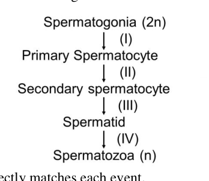
Spermatogonia to spermatozoa flowchartTopic: Modern-Quantum Physics Metodi: Physical Modeling Competenze: Diagrammatic Reasoning, Physical Reasoning Fonte: Testo (PDF) — p.3
Problema 5
(1 point) The addition of a natural product to a growing monolayer of cells has been found to exclusively inhibit nuclear import. This treatment will most potently affect which one of the following processes?
(a) mRNA export and fresh protein synthesis. (b) Cellular signalling leading to mRNA formation. (c) Synthesis of rRNA and new ribosomes. (d) Nuclear pore distribution on the nuclear envelope.
Topic: Modern-Quantum Physics Metodi: Physical Modeling, Experimental Data Analysis Competenze: Physical Reasoning, Diagrammatic Reasoning Fonte: Testo (PDF) — p.3
Problema 6
(1 point) A sample of plasmid DNA was divided into 3 tubes M, N and O. Restriction enzyme (RE) 1 was added to tube M; RE 2 was added to tube N and a mixture of RE 1 and RE 2 was added to tube O. After incubation of the tubes for 1 hour at C, the samples from the tubes were loaded into agarose gels and electrophoresis was carried out. The relative positions of the DNA fragments after electrophoretic separation are shown. Note that both enzymes had at least one restriction site on the treated DNA molecule. (Arrow indicates direction of migration of bands.)
Which of the following can be deduced from the results?
(a) Both enzymes have more than one restriction sites. (b) Restriction site of enzyme 1 corresponds/overlaps with restriction site of enzyme 2. (c) Restriction sites of enzyme 2 are equidistant from each other. (d) Restriction sites of enzyme 1 and 2 are equidistant from each other.
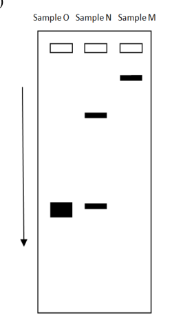
Agarose gel electrophoresis of plasmid DNA fragments M, N, OTopic: Modern-Quantum Physics Metodi: Physical Modeling, Experimental Data Analysis Competenze: Experimental Data Analysis, Physical Reasoning Fonte: Testo (PDF) — p.3
Problema 7
(1 point) Earl Sutherland, Edwin Krebs and Edmand Fischer were studying the activation of liver enzyme ‘glycogen phosphorylase’ by the hormone epinephrine. Glycogen phosphorylase hydrolyses stored glycogen in liver to increase blood glucose level in a fight or flight response. It is always present in an inactive form in the liver cell cytoplasm.
In an experiment, they separated homogenized liver tissue into two test tubes. TT1 containing cytoplasm and TT2 having buffer solution suspended with broken cell membrane only. They added epinephrine to TT2 and incubated for a certain time. It was followed by high speed centrifugation for settling of the membrane fraction. The supernatant was used for further experiments. When a few drops of this supernatant were added to TT1, the active form of glycogen phosphorylase was detected. On the other hand, when epinephrine was added directly to TT1, no enzyme activity was detected. Which of the following can be correctly concluded from this experiment?
(a) Epinephrine directly binds to enzyme glycogen phosphorylase and functions as an activator. (b) The enzyme has sites for both epinephrine and membrane protein. The activation occurs only when both bind to the enzyme. (c) Soluble messenger molecules formed in TT2 after addition of epinephrine are involved in enzyme activation. (d) Epinephrine synthesis is upregulated in TT2 and this directly acts as an activator in TT1.
Topic: Modern-Quantum Physics Metodi: Physical Modeling, Experimental Data Analysis Competenze: Experimental Data Analysis, Physical Reasoning Fonte: Testo (PDF) — p.4
Problema 8
(1 point) The figure depicts a transverse section of stem of a plant stained suitably to view various micromorphological features. Find the appropriate statement that would explain the functions of structures marked 1 and 2.
(a) 1 helps in gaseous exchange between atmosphere and inner plant tissue while 2 helps transfer of aqueous material horizontally. (b) 1 helps in gaseous exchange including transpiration while 2 helps mainly in storage of starch grains and forms a connection between cambium and cork cambium. (c) 1 helps in salt exudation while 2 primarily forms a support structure to hold conducting vessels together in tall plants. (d) 1 helps in preventing desiccation of inner plant tissues while 2 is generally formed due to accumulation of waste products that get solidified over time in mature plants.
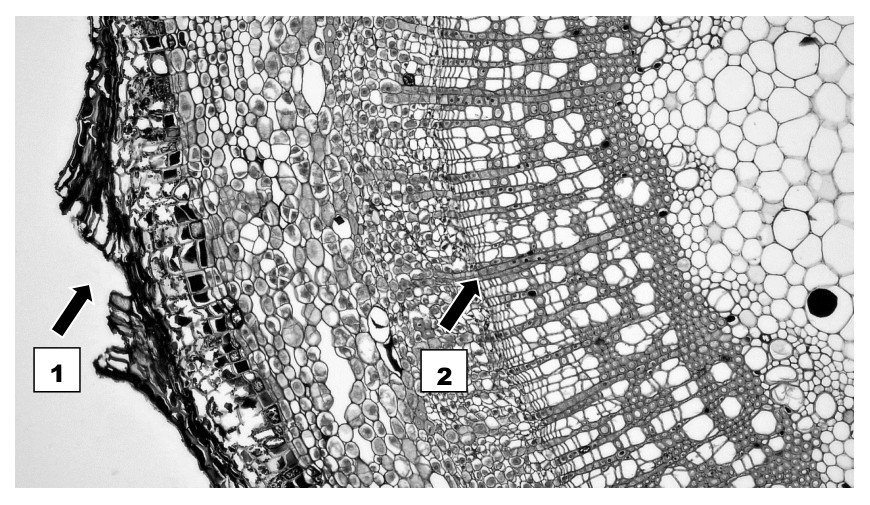
Transverse section of plant stem, structures 1 and 2Topic: Modern-Quantum Physics Metodi: Physical Modeling Competenze: Diagrammatic Reasoning, Physical Reasoning Fonte: Testo (PDF) — p.4
Problema 9
(1 point) Select the appropriate statement that correctly explains the structure pointed by arrows in the figure which depicts transverse section passing through medulla of a stem.
(a) These are spaces formed due to secondary growth in a mature stem. (b) These are ducts that allow flow of aromatic and antiseptic secretions in a mature stem. (c) These are spaces formed due to loss of conducting elements in an old stem. (d) These are ducts that would eventually get filled with starch and other reserve food materials, as the stem matures.
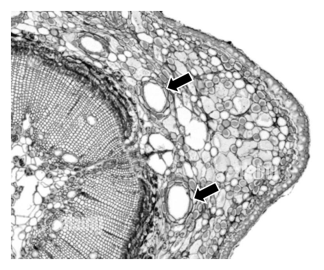
Transverse section of stem medulla with arrowsTopic: Modern-Quantum Physics Metodi: Physical Modeling Competenze: Diagrammatic Reasoning, Physical Reasoning Fonte: Testo (PDF) — p.5
Problema 10
(1 point) Karl Hamner and James Banner of University of California were checking the effect of varying day length on flowering in Cocklebur plants. They ran two sets of conditions where first they kept the day length (light regime) constant and changed the duration of darkness (dark regime). They got the following results:
| Light regime (hr) | Dark regime (hr) | Effect Observed |
|---|---|---|
| 7 | 8 | No flowering |
| 16 | 9 | Flowering |
| 10 | Flowering | |
| 11 | Flowering |
In the second set of conditions, they varied the day as well as night regimes as shown below for plant sets P–S:
| Plant set | Light time (hr) | Dark Time (hr) |
|---|---|---|
| P | 17 | 12 |
| Q | 10 | 9 |
| R | 12 | 6 |
| S | 13 | 14 |
The set/s of plants that would show flowering is/are:
(a) Only S (b) P and Q (c) Q and R (d) P and S
Topic: Modern-Quantum Physics Metodi: Experimental Data Analysis, Physical Modeling Competenze: Experimental Data Analysis, Physical Reasoning Fonte: Testo (PDF) — p.6
Problema 11
(1 point) The concentrations of some essential elements in plants vary according to their need in the various physiological activities. Which of the following correctly depicts the relative concentration of different elements in a typical plant?
(a) K > S > Cl > Cu (b) Cl > K > S > Cu (c) S > Cl > Mn > K (d) K > Cl > Cu > S
Topic: Modern-Quantum Physics Metodi: Physical Modeling, Order-of-Magnitude Estimation Competenze: Physical Reasoning, Estimation & Approximation Fonte: Testo (PDF) — p.6
Problema 12
(1 point) Type I diabetes mellitus is a complex disorder where individuals are insulin deficient. However, not all types of cells or tissues in the body are insulin sensitive and this can have an effect on their function in an untreated patient. Mark the correct pair of property of a tissue and the effect.
(a) Liver cells – sensitive to insulin → lead to glycogenesis. (b) Brain cells – insensitive to insulin → lead to comatose state. (c) Satiety centre neurons – sensitive to insulin → polyphagia. (d) Intestinal villi cells – insensitive to insulin → mal-absorption of glucose.
Topic: Modern-Quantum Physics Metodi: Physical Modeling, Experimental Data Analysis Competenze: Physical Reasoning, Diagrammatic Reasoning Fonte: Testo (PDF) — p.6
Problema 13
(1 point) Consider a rare species of Himalayan mole in which males can be of three phenotypes: big sized (alpha), medium sized or small sized (sneaky). The alpha males compete out other males by strength and mate with females. The sneaky males have the character of sneaking into the alpha males territories and mating with the females. The medium males are stronger than the sneaky males but weaker than the alpha males.
Given these conditions, if all three types of moles in the same proportion are put together at the same location, which of the following will be true?
(a) Alpha and sneaky males will have equal reproductive fitness. (b) Medium-sized males will have the least reproductive fitness. (c) Sneaky males will have the least reproductive fitness. (d) Medium-sized and sneaky males will both have equally low reproductive fitness.
Topic: Modern-Quantum Physics Metodi: Physical Modeling, Statistical Averaging Competenze: Physical Reasoning, Mathematical Modeling Fonte: Testo (PDF) — p.7
Problema 14
(1 point) You come across a 200-year-old lab journal of an eminent scientist. The journal describes the hunting behaviour of lions in Gir National park. This is a passage from the journal:
“These forests have two pre-dominant deer species — Axis axis and Axis nervalis. A. axis can run faster than A. nervalis. Surprisingly the lions hunt A. axis but avoid A. nervalis. I have investigated and discovered that A. nervalis has a neurotoxin that causes severe itching. Both the deer species have light brown spots and look similar to each other.”
Which of the following scenarios will be the most beneficial to both the deer populations?
(a) Similar large populations of A. axis and A. nervalis. (b) Larger population of A. axis and smaller population of A. nervalis. (c) Smaller population of A. axis and larger population of A. nervalis. (d) One of the species develops a distinctly different spot pattern.
Topic: Modern-Quantum Physics Metodi: Physical Modeling, Statistical Averaging Competenze: Physical Reasoning, Mathematical Modeling Fonte: Testo (PDF) — p.7
Problema 15
(1 point) You have identified three mutations in fruit fly Drosophila melanogaster. Flies that are homozygous for “y” mutant gene have yellow body (wild-type have tan body). Flies that are homozygous for “ey” mutant gene are eyeless (wild-type have red eyes). Flies that are homozygous for “sw” mutant gene have short wings (wild-type have long wings). (Note: All mutant phenotypes are recessive. Wild-type genes are denoted by superscript ’+’ and mutants by ’−’. For example, tan body will be denoted as and yellow body as .)
You mate flies from two true-breeding strains (F0, parental flies), and get progeny F1 flies that have tan body, red eyes and long wings. You take the females from F1 generation and mate them to males that have yellow body, eyeless, short wings. In F2 you collect 1000 flies and find the following:
- Tan body, eyeless, long wings: 485 flies
- Yellow body, red eyes, short wings: 468 flies
- Tan body, eyeless, short wings: 22 flies
- Yellow body, red eye, long wings: 25 flies
Which population set is a result of recombination?
(a) Tan body, eyeless, long wings & Yellow body, red eyes, short wings (b) Tan body, eyeless, short wings & Yellow body, red eyes, long wings (c) Tan body, eyeless, long wings & Yellow body, red eyes, long wings (d) Tan body, eyeless, short wings & Yellow body, red eyes, short wings
Topic: Modern-Quantum Physics Metodi: Statistical Averaging, Experimental Data Analysis Competenze: Mathematical Modeling, Physical Reasoning Fonte: Testo (PDF) — p.7
Problema 16
(1 point) ‘A’ represents the dominant allele and ‘a’ represents the recessive allele of a pair. If, in 1000 offspring, 500 are ‘aa’ and 500 are of some other genotype, which of the following are most probably the genotypes of the parents?
(a) Aa and Aa (b) Aa and aa (c) AA and Aa (d) AA and aa
Topic: Modern-Quantum Physics Metodi: Statistical Averaging, Physical Modeling Competenze: Mathematical Modeling, Physical Reasoning Fonte: Testo (PDF) — p.7
Problema 17
(1 point) A cross between two true breeding lines one with dark blue flowers and one with bright white flowers produces F1 offspring that are light blue. When the F1 progeny are selfed, a 1:2:1 ratio of dark blue to light blue to white flowers is observed. What genetic phenomenon is consistent with these results?
(a) Epistasis (b) Incomplete dominance (c) Codominance (d) Inbreeding depression
Topic: Modern-Quantum Physics Metodi: Statistical Averaging, Physical Modeling Competenze: Mathematical Modeling, Physical Reasoning Fonte: Testo (PDF) — p.7
Problema 18
(1 point) Epistasis occurs when one gene alters the phenotypic effect of another gene. In a breed of dogs, Labrador retrievers, the E/e gene determines the expression of the B/b gene. Thus, a dog with alleles B and E is black; a dog with alleles bb and E is brown while a dog with ee is yellow, regardless of its B/b allele. If two dogs that are heterozygous for both genes mate, the phenotypic proportion of yellow puppies will be:
(a) (b) (c) (d)
Topic: Modern-Quantum Physics Metodi: Statistical Averaging, Physical Modeling Competenze: Mathematical Modeling, Physical Reasoning Fonte: Testo (PDF) — p.8
Problema 19
(1 point) A trend of territory size and food abundance is shown in the graph.
Graphs I and II, respectively, most likely indicate:
(a) Winter and summer season (b) Arid and evergreen habitat (c) Juvenile and adult animal (d) Female and male animal
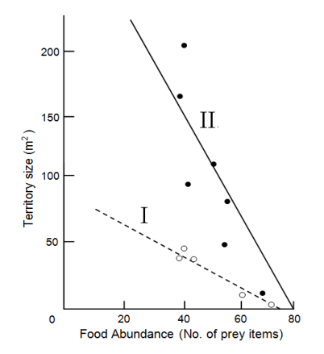
Territory size vs food abundance graphs I and IITopic: Modern-Quantum Physics Metodi: Experimental Data Analysis, Physical Modeling Competenze: Graph Linearization, Physical Reasoning Fonte: Testo (PDF) — p.8
Problema 20
(1 point) The graphs below depict the relation between the flocking behavior by pigeons (prey) and predation of pigeons by hawk (predator).
Which of the following statements is NOT true for the results shown in the graph?
(a) Percent attack success of hawk decreases with increase in flock size of pigeon. (b) The median reaction distance for pigeon increases with increase in members in the flock. (c) Percent attack success and median reaction distance are directly proportional to each other. (d) The hawk is least likely to be detected with a smaller number of pigeons in the flock.
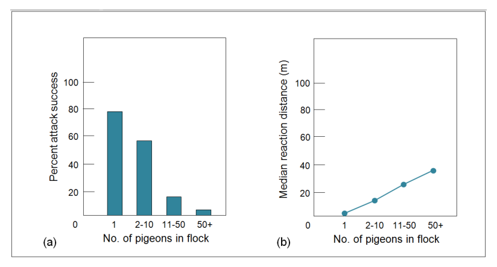
Pigeon flock size vs hawk attack success and reaction distanceTopic: Modern-Quantum Physics Metodi: Experimental Data Analysis, Physical Modeling Competenze: Graph Linearization, Physical Reasoning Fonte: Testo (PDF) — p.8
Problema 21
(1 point) Which one of the following options is a combination of a derived trait and ancestral trait respectively?
(a) Absence of teeth in turtles and presence of teeth in reptiles. (b) Presence of teeth in mammals and absence of teeth in birds. (c) Absence of teeth in birds and absence of teeth in turtles. (d) Presence of teeth in reptiles and presence of teeth in mammals.
Topic: Modern-Quantum Physics Metodi: Physical Modeling, Experimental Data Analysis Competenze: Physical Reasoning, Diagrammatic Reasoning Fonte: Testo (PDF) — p.9
Problema 22
(2 points) The stimulus received from external factors like heat, pressure, odour, movement and current generates impulse which travels rapidly along the length of a neuron. This transmission of impulse is not a simple electric current but it is an electrochemical change propagating through the length of an axon. This is how the neurons communicate the stimulus to another neuron or effector organ.
Consider a situation where an isolated neuron from Aplysia (sea slug) having a long axon is placed under experimental condition. Two electrodes (I and II) are placed several centimeters apart on the surface of the axon. They are connected to the recording equipment. During an experiment, an extremely small electrical stimulus (P unit) was applied to the cell body. It did not create any response as is shown in the figure below. When the intensity of stimulus gradually was increased upto a certain level (Y unit), response was recorded.
At unit P there was no response recorded by both electrodes. Solid line and dotted line indicate responses detected by electrodes I and II respectively.
(A) Which one of the given graphs correctly represents the recorded response by the two electrodes to the stimulus of ‘Y’ intensity? Choose the correct option and put a tick mark in the appropriate box.
(B) Which graph correctly shows the response if the stimulus intensity increased to 2Y units?
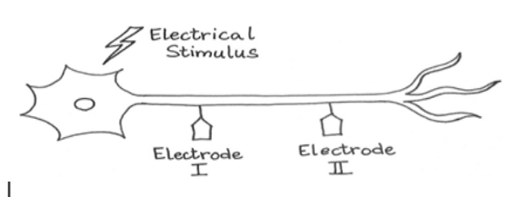
Neuron axon with two electrodes at sub-threshold stimulus P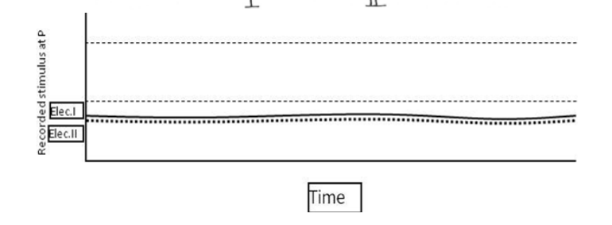
Multiple graphs of electrode response options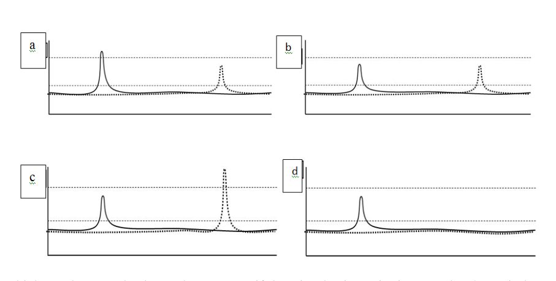
Response graph options at threshold stimulus Y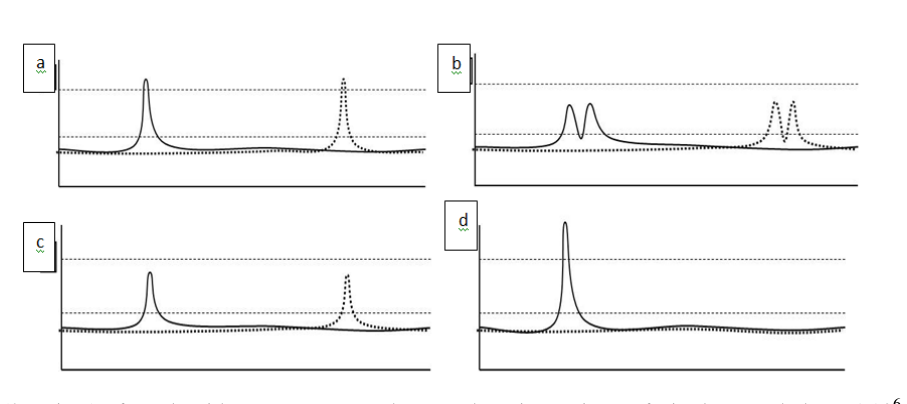
Response graph options at supramaximal stimulus 2YTopic: Electromagnetism, Modern-Quantum Physics Metodi: Experimental Data Analysis, Physical Modeling Competenze: Experimental Data Analysis, Graph Linearization Fonte: Testo (PDF) — p.10
Problema 23
(2 points) If nucleotides were arranged at random in a piece of single-stranded RNA of nucleotides long, and if the base composition of this RNA was 20% A, 35% C, 15% U, and 30% G, how many times would you expect the specific sequence 5’-ACCG-3’ to occur?
Topic: Modern-Quantum Physics Metodi: Statistical Averaging, Physical Modeling Competenze: Mathematical Modeling, Physical Reasoning Fonte: Testo (PDF) — p.11
Problema 24
(3 points) The 24 hour cycle of concentrations of three compounds P, Q and R in blood plasma are indicated in the graph.
Note the changes in the levels of these compounds after each meal and identify the compounds P, Q and R. Choose from the options given below and fill in the blanks.
Options: A. Glucose B. Glucagon C. Insulin D. ATP
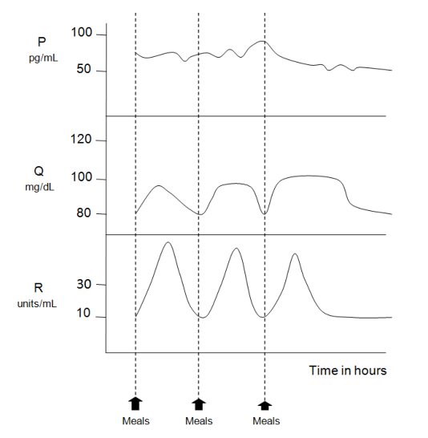
24-hour blood plasma concentration cycles of P, Q, RTopic: Modern-Quantum Physics, Thermodynamics Metodi: Experimental Data Analysis, Physical Modeling Competenze: Experimental Data Analysis, Graph Linearization Fonte: Testo (PDF) — p.11
Problema 25
(3 points) In an experiment involving bacteriophages, the following steps were followed:
(i) Bacteria growing on media containing radioactive sulphur (S) were infected with T2 bacteriophage. (ii) The virus particles were then separated from the bacteria, washed and used to infect fresh bacteria grown in media with non-radioactive sulphur. (iii) After a few minutes, the tube was vigorously agitated to detach viruses from the bacterial cells. (iv) Centrifugation was carried out so as to separate the bacteria and viruses as two fractions in the tube. (v) Presence of S was checked for in the tube by checking for radioactivity in each fraction.
Mark the following statements as true or false by putting tick marks in the appropriate boxes.
a. S will be detected in both the pellet as well as the supernatant. b. S will be detected in the pellet of the tube since bacterial proteins will get radiolabeled. c. S will be detected in the bacteria due to the insertion of the viral genome. d. S will be detected in the supernatant viral fraction. e. S will be detected in the viral proteins present in the pellet. f. S will label the viral proteins but not the nucleic acid.
Topic: Nuclear & Particle Physics, Modern-Quantum Physics Metodi: Experimental Data Analysis, Physical Modeling Competenze: Experimental Data Analysis, Physical Reasoning Fonte: Testo (PDF) — p.11
Problema 26
(3.5 points) Major features/steps in the cell signalling pathway leading to changes in cell activity are listed below.
i. Signal is amplified. ii. Protein kinase activity is enhanced. iii. Synthesis of specific protein is turned on. iv. Binding with signal changes receptor conformation. v. Action of protein alters cell activity. vi. Phosphorylation alters the function of responder protein. vii. Transcription factor is activated.
Arrange the steps in the correct order and fill the appropriate step numbers in the boxes.
Topic: Modern-Quantum Physics Metodi: Physical Modeling, Experimental Data Analysis Competenze: Physical Reasoning, Diagrammatic Reasoning Fonte: Testo (PDF) — p.13
Problema 27
(2 points) The skeletal remains of Tsar Nicholas II, his wife Tsarina Alexandria and three of their children were found in 1991 and subjected to DNA fingerprinting. Five Short Tandem Repeats (STRs) were tested and the results for the samples of the children are shown below.
Analyse the results and indicate if each of the statements is True or False by putting tick marks in the appropriate boxes.
a. The mother and father both are homozygous for STR-2. b. If the Tsarina is heterozygous for STR-1, then the Tsar could either be heterozygous or homozygous. c. Either the Tsar or the Tsarina could be homozygous for STR-3. d. Both parents are heterozygous for STR-5.
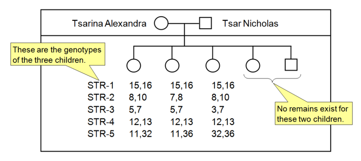
STR DNA fingerprinting gel results for five lociTopic: Modern-Quantum Physics Metodi: Experimental Data Analysis, Statistical Averaging Competenze: Experimental Data Analysis, Physical Reasoning Fonte: Testo (PDF) — p.13
Problema 28
(6 points) A researcher was carrying out a study on the organ identity genes in Arabidopsis flowers. Genes A, B and C in flowers code for subunits of transcription factors which are active as dimers. Gene regulation in these cases is combinatorial — that is, the composition of the dimers determines which other genes will be activated by the transcription factor. For example, a dimer made up of only transcription factor A would activate transcription of the genes that make sepals; a dimer made up of A and B would result in petals, and so forth. A schematic of the organs developed in the four whorls of a wild type Arabidopsis flower is shown below.
| Whorl 1 | Whorl 2 | Whorl 3 | Whorl 4 | |
|---|---|---|---|---|
| Genotype/Genes transcribed | A | A, B | B, C | C |
| Phenotype | Sepals | Petals | Stamens | Carpels |
The researcher carried out different sets of experiments in which either gene A, B or C were mutated leading to loss of function and/or the promoter of the respective mutated gene was coupled to some other gene. Three experimental conditions are listed below. For each experiment, fill in the table with the expected gene/s transcribed in each whorl and the corresponding phenotypes.
Note: Points will be given only for every completely correct whorl.
(A) Experiment 1: Mutation of class A genes and coupling of promoter for gene A to gene C. (B) Experiment 2: Mutation of class B genes. (C) Experiment 3: Mutation of class C genes and coupling of promoter for gene C to gene A.
Options for genes: A/B/C. Options for Phenotypes: Sepals/Petals/Stamens/Carpels.
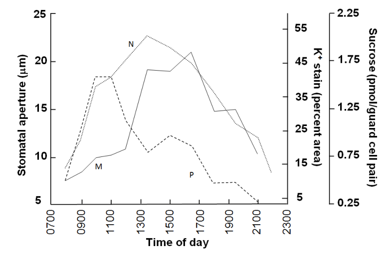
Arabidopsis flower whorl organ identity schematicTopic: Modern-Quantum Physics Metodi: Physical Modeling, Experimental Data Analysis Competenze: Diagrammatic Reasoning, Mathematical Modeling Fonte: Testo (PDF) — p.13
Problema 29
(2 points) Transpiration in plants is directly related to the opening and closing of stomata. The solute concentration in the guard cells plays an important role in this. The diagram below depicts the changes in (i) the size of the stomatal aperture, (ii) the sucrose concentration in the guard cells and (iii) K ion concentration in the guard cells (as % area of guard cell stained by a specific stain) in a tropical legume Vicia faba. Match these changes (i, ii and iii) correctly with the curves M, N and P below.
Choose the correct option and put a tick mark in the appropriate box.
(a) i-M, ii-N, iii-P (b) i-M, ii-P, iii-N (c) i-N, ii-M, iii-P (d) i-N, ii-P, iii-M
Topic: Fluid Mechanics, Modern-Quantum Physics Metodi: Experimental Data Analysis, Physical Modeling Competenze: Graph Linearization, Physical Reasoning Fonte: Testo (PDF) — p.15
Problema 30
(4 points) Various physiological processes that occur in plants have different sensitivity to changes in water potential. The graphic below shows the changes in physiological processes (A–D) due to dehydration. The thickness of the arrows corresponds to the magnitude of the physiological process.
Choose from the options given below and fill in the blanks with the appropriate number against the physiological processes indicated in A–D.
Options: (i) Cell wall expansion, (ii) Cell wall synthesis, (iii) Photosynthesis, (iv) Abscisic acid accumulation
Topic: Fluid Mechanics, Modern-Quantum Physics Metodi: Experimental Data Analysis, Physical Modeling Competenze: Diagrammatic Reasoning, Physical Reasoning Fonte: Testo (PDF) — p.15
Problema 31
(4 points) In animals, there are different factors like environmental conditions, size, thermoregulation, body growth in mature adults which affect the utilization of chemical energy obtained from the food.
Typical annual energy budget of four adult terrestrial vertebrates varying in size and thermoregulatory strategies was studied. The table given below gives the information of a female human, a male Himalayan rabbit, a female house mouse and a female rat snake and the pie charts given show the annual energy expenditures for various functions as indicated by the patterns of the slices in the pie charts.
| Female human | Male Himalayan rabbit | Female house mouse | Female rat snake | |
|---|---|---|---|---|
| Weight | 50 kg | 4 kg | 25 g | 4 kg |
| Annual energy expenditure (kcal/yr) | 800,000 | 340,000 | 4,000 | 8,000 |
Correlate the pie charts to the correct animals and fill in the appropriate alphabets in the blanks against each animal.
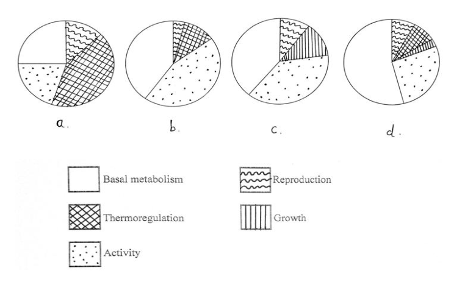
Pie charts of annual energy expenditure for four vertebratesTopic: Thermodynamics, Order-of-Magnitude Estimation Metodi: Experimental Data Analysis, Order-of-Magnitude Estimation Competenze: Estimation & Approximation, Physical Reasoning Fonte: Testo (PDF) — p.15
Problema 32
(4 points) Four patterns of ventilation are described below:
I: Hyperpnea: Increased respiratory rate and/or volume in response to increased metabolism. II: Hyperventilation: Increased respiratory rate and/or volume without increase in metabolism. III: Hypoventilation: Decreased alveolar ventilation. IV: Tachypnea: Rapid breathing, increased respiratory rate with decreased depth.
Four conditions (a–d) are listed. Match each of the conditions with the correct patterns (I–IV) and fill in the blanks with the appropriate numbers.
Topic: Fluid Mechanics, Thermodynamics Metodi: Physical Modeling, Experimental Data Analysis Competenze: Physical Reasoning, Diagrammatic Reasoning Fonte: Testo (PDF) — p.16
Problema 33
(6 points) Resistance to air passage through any human system such as the respiratory system depends on three main factors:
where:
- : resistance (to flow)
- : length of (respiratory) system
- : viscosity of substance (air) flowing through the system
- : radius of tubes in the system
What will happen to the respiratory efforts by a person in the three situations (I, II and III) given in the table? Fill in the table with the correct answers in the respective boxes. Choose from the options provided. Only an entirely correct row will be awarded points.
Topic: Fluid Mechanics, Newtonian Mechanics Metodi: Physical Modeling, Bernoulli’s Equation Competenze: Mathematical Modeling, Physical Reasoning Fonte: Testo (PDF) — p.16
Problema 34
(2 points) A trained swimmer knows that a short period of hyperventilation can allow him/her to extend the period he/she can spend under water. However, it is not considered a safe practice. A few statements about the mechanism and risk associated with this are given. Mark each statement as true or false by putting tick marks in the appropriate boxes.
a. With increase in CO concentration in lungs, the urge to breathe reduces. b. Hyperventilation leads to a reduction of O and CO pressure in the lungs. c. The blood pH increases as a result of hyperventilation and leads to increased affinity of hemoglobin for oxygen. d. Increased hemoglobin affinity for oxygen leads to hypoxia in the brain tissue leading to loss of consciousness.
Topic: Fluid Mechanics, Thermodynamics Metodi: Physical Modeling, Experimental Data Analysis Competenze: Physical Reasoning, Mathematical Modeling Fonte: Testo (PDF) — p.17
Problema 35
(2.5 points) Drop in arterial blood pressure causes changes leading to autoregulatory widening of vessels leading to further decrease in pressure. This is taken care of by two mechanisms given in the representative figure.
Choose from the options given below and complete the figure by filling in the boxes with the appropriate alphabets.
A. Kidney releases renin. B. Arterial pressure rises. C. Local accumulation of metabolic wastes. D. Stimulates water reabsorption by kidneys. E. Causes vessels to constrict.
Topic: Fluid Mechanics, Newtonian Mechanics Metodi: Physical Modeling, Experimental Data Analysis Competenze: Diagrammatic Reasoning, Physical Reasoning Fonte: Testo (PDF) — p.17
Problema 36
(2 points) You cross a true-breeding hairy elephant that cannot whistle with a true-breeding hairless elephant that can whistle. All the progeny (F1) are hairy elephants that can whistle. You mate F1 male and F1 female elephants and obtain the following result:
- Hairy elephants that whistle: 319 elephants
- Hairy elephants that cannot whistle: 105 elephants
- Hairless elephants that whistle: 96 elephants.
Based on the results, indicate whether each of the following statements can be inferred or cannot be inferred by putting tick marks in the appropriate boxes.
a. Phenotype of hairless elephants that cannot whistle is lethal. b. Traits of body hair and whistling do not follow Mendelian patterns of inheritance. c. The two genes are very closely linked and cannot segregate. d. The gene controlling the ability to whistle shows incomplete dominance.
Topic: Modern-Quantum Physics Metodi: Statistical Averaging, Physical Modeling Competenze: Mathematical Modeling, Physical Reasoning Fonte: Testo (PDF) — p.17
Problema 37
(2 points) Ladybird beetle is your model organism. You have identified three autosomal recessive traits. Ladybirds homozygous for mutation are “hump-backed” (wild-types are straight-backed); those homozygous for mutation are “blistery-winged” (wild-types are smooth-winged); and those homozygous for are “stubby-legged” (wild-types are long-legged). You mate two true-breeding strains, and all the F1 progeny are straight-backed, smooth-winged and long-legged. You then mate F1 females to males that are hump-backed, blistery-winged and stubby-legged. The F2 population has the following phenotypes:
| Phenotype | No. of Ladybirds |
|---|---|
| Hump-backed, blistery-winged and stubby-legged | 26 |
| Hump-backed, blistery-winged and long-legged | 455 |
| Hump-backed, smooth-winged and long-legged | 24 |
| Straight-backed, blistery-winged and stubby-legged | 27 |
| Straight-backed, blistery-winged and long-legged | 4 |
| Straight-backed, smooth-winged and stubby-legged | 442 |
| Straight-backed, smooth-winged and long-legged | 22 |
From the data given above, what is the distance between and loci in centimorgan (cM)? Note that the final answer will be given marks only if calculations are shown in the box given and the final answer is filled in the blank.
Topic: Modern-Quantum Physics Metodi: Statistical Averaging, Experimental Data Analysis Competenze: Mathematical Modeling, Physical Reasoning Fonte: Testo (PDF) — p.17
Problema 38
(2 points) The given picture is that of a wing of Drosophila melanogaster from a fly with normal wings () and that of a crossveinless () mutant. Black body color is another Drosophila trait governed by a recessive allele (). A cross was made between females with normal wings and wild type body color and normal winged, black body males. The females were heterozygous for both the genes. The progeny obtained from this cross is tabulated below:
| Count | ||
|---|---|---|
| Males | Normal wings, wild type body color | 123 |
| Crossveinless and black body color | 125 | |
| Normal wings and black body color | 127 | |
| Crossveinless, wild type body color | 125 | |
| Females | Normal wings, wild type body color | 244 |
| Normal wings and black body color | 256 |
Based on the results, indicate whether each of the following can or cannot be concluded by putting tick marks in the appropriate boxes.
a. The alleles and assort independently. b. Allele is on an autosome. c. is an X linked gene. d. The genes for crossveinless and black body color show epistatic interactions.
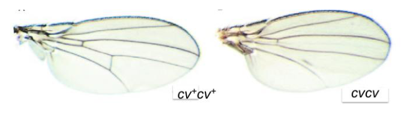
Drosophila normal wing vs crossveinless mutant wingTopic: Modern-Quantum Physics Metodi: Statistical Averaging, Experimental Data Analysis Competenze: Mathematical Modeling, Experimental Data Analysis Fonte: Testo (PDF) — p.18
Problema 39
(1.5 points) Drosophila has proven to be an excellent model system to study human neurodegenerative disorders. One of the assays used in this study is the “climbing assay”. This assay measures the ability of the flies to cross a target line as shown in the figure. While wild type flies cross the target line in about 120 sec, flies with mutation leading to neurodegenerative disorders fail to cross the line.
A researcher generated a mutant with reduced climbing ability (non-climber phenotype). Analysis also showed that in this mutant stock there was nonsense mutation in gene ‘A’. The mutated allele is denoted as ‘a’. In order to find out if this mutation is responsible for the non-climber phenotype the researcher crossed the mutants to wild type flies. The F1 flies showed no climbing defect. The F1 flies were sib-mated. If the nonsense mutation in gene A is responsible for the non-climber phenotype, mark each of the following statements as true or false by putting tick marks in the appropriate boxes.
a. The F2 progeny would consist of climbers that can have normal as well as mutant allele while non-climbers would have mutant alleles only. b. Among the climbers in the F2 progeny, the number of individuals that carry a mutant allele will be less than that of those that carry a normal allele. c. All non-climbers in the F2 progeny are homozygous for the nonsense mutation.
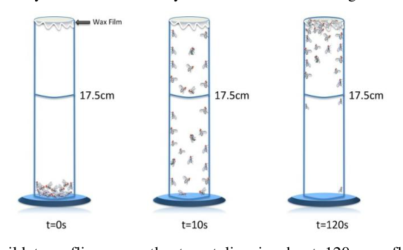
Drosophila climbing assay vial with target lineTopic: Modern-Quantum Physics Metodi: Statistical Averaging, Physical Modeling Competenze: Mathematical Modeling, Physical Reasoning Fonte: Testo (PDF) — p.19
Problema 40
(3 points) In continuation with Q. 39, 1000 climbers which had the nonsense mutation were randomly mated with 1000 climbers without the nonsense mutation. The progeny obtained was again allowed to mate randomly. Given that only 20% of the non-climbers are fertile, what percentage of progeny is expected to be non-climbers?
Note that the final answer will be given marks only if calculations are shown in the box given and the final answer is filled in the blank. Give your answer upto 2 decimal places.
Topic: Modern-Quantum Physics Metodi: Statistical Averaging, Physical Modeling Competenze: Mathematical Modeling, Physical Reasoning Fonte: Testo (PDF) — p.19
Problema 41
(1.5 points) Asian Paradise Flycatcher (Terpsiphone paradisi) shows two colour morphs in males — white and rufous. A study was conducted using White males with Long tail (WL), Rufous males with Long tail (RL) and Rufous males with Short tails (RS). RS males look similar to females. Breeding activity of these birds was studied to evaluate the adaptive significance of colour dimorphism in male birds. The date of laying the first egg is recorded in various nests of three types of pairs. The observations are depicted in the picture below.
(Day 1 = March 22)
Based on the data, mark the following interpretations as true or false by putting tick marks in the appropriate boxes.
a. RS males are least preferred by females and those that pair with them are probably first-time breeders. b. Long tail and rufous colour have equal adaptive advantage in ensuring successful nesting. c. Length of tail in male has a greater significance in mate selection as compared to colour of the male.
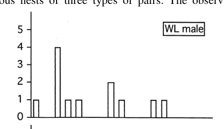
First egg lay date distribution for WL, RL, RS pairs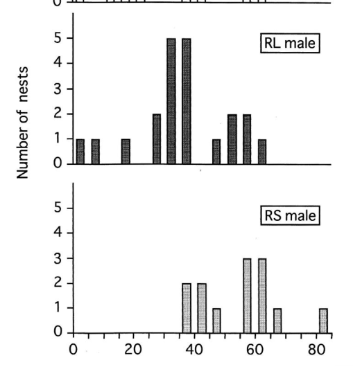
Breeding activity graphs for flycatcher male morphs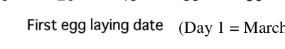
Legend for flycatcher breeding dataTopic: Modern-Quantum Physics Metodi: Experimental Data Analysis, Statistical Averaging Competenze: Experimental Data Analysis, Physical Reasoning Fonte: Testo (PDF) — p.20
Problema 42
(2 points) Finches are seed-eating birds that are found in a wide variety of habitats including higher altitudes. To understand the effect of altitude on the life history of these birds, the clutch size, the number of broods, the length of incubation time and that of nestling period were compared for species occupying different altitudinal habitats. The observations are plotted in the graphs shown.
Mark the following interpretations as true or false by putting tick marks in the appropriate boxes.
a. The nestling period of high-elevation species is longer than that of low-elevation species. b. Changes in ecological conditions along elevation gradient could favour population divergence in finches. c. At higher elevations, finches have smaller clutches, produce fewer broods and have longer incubation periods. d. Ecological changes that occur with altitudinal gradient could favour allopatric speciation among high altitude finch populations.
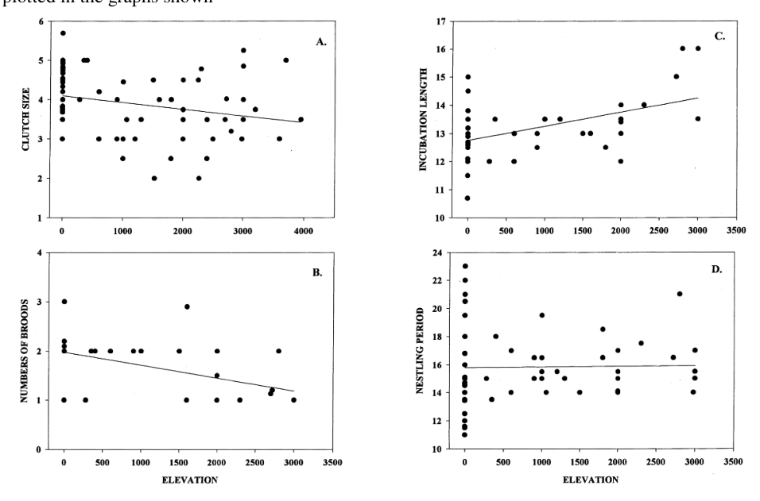
Altitude vs clutch size, broods, incubation and nestling periodTopic: Modern-Quantum Physics Metodi: Experimental Data Analysis, Statistical Averaging Competenze: Experimental Data Analysis, Graph Linearization Fonte: Testo (PDF) — p.21
Problema 43
(2 points) Ecologist Alexandra Bosolo undertook a series of experiments with a species of swordtail fish, Xiphophorus montezumae. The males of this species have an asymmetric caudal fin as a result of an extended sword-like extension and the presence of this sword increases the mating success of the fish. The experiments were designed to quantify the metabolic costs of the sword fins during two types of swimming — routine (which occurs in the absence of females) and courtship (occurs when females are present) swimming. The experiments were carried out with groups of male fish with normal and shortened sword fins (i.e. the sword fins were surgically shortened). The results of the experiments are represented in the graph.
Indicate whether each of the following statements is true or false by putting tick marks in the appropriate boxes.
a. The rate of increase in oxygen consumption due to courtship swimming in the group with normal sword is greater than the increase in the group with shortened sword. b. Energy cost for males with normal swords is significantly higher than that for males with shortened swords for both routine as well as courtship swimming. c. By comparing female choice with male’s metabolic cost, it can be deduced that sexual and natural selection have the same positive effect on sword evolution. d. It is possible that the average sword length of males in populations that occurs sympatrically (together) with predatory fish is significantly longer than populations where predators are not present.
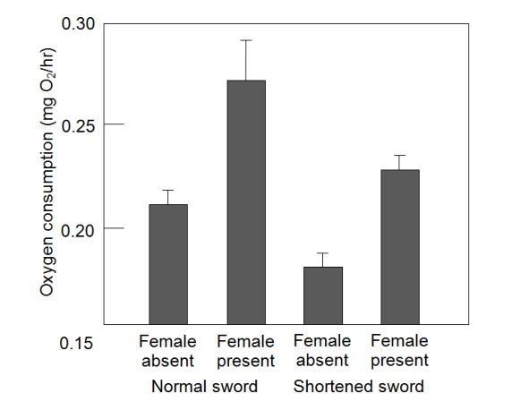
Oxygen consumption vs swimming type for swordtail fish groupsTopic: Thermodynamics, Modern-Quantum Physics Metodi: Experimental Data Analysis, Statistical Averaging Competenze: Experimental Data Analysis, Graph Linearization Fonte: Testo (PDF) — p.21
Problema 44
(2 points) The densities of two types of fishes — striped seaperch and black perch at various depths in an aquatic habitat in the presence of both populations of fish and when each type of the fish is removed are graphically represented.
State whether each of the following statements is true or false by putting tick marks in the appropriate boxes.
a. The fundamental niche and the realized niche of the striped seaperch is the same. b. The fundamental niche of both striped and black perch completely overlaps with each other. c. The realized niche of the striped seaperch is shallower than that of the black perch. d. Black perch could be a stronger competitor than striped perch at greater depths.
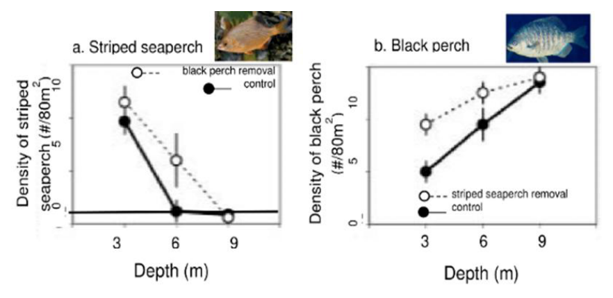
Fish density vs depth for striped seaperch and black perchTopic: Modern-Quantum Physics Metodi: Experimental Data Analysis, Statistical Averaging Competenze: Experimental Data Analysis, Graph Linearization Fonte: Testo (PDF) — p.22
Problema 45
(2 points) A study was carried out on stickleback fish which feed on water fleas. The water fleas are known to have natural jerky movements which could be distracting to the fish. In an experiment, hungry predatory fish were simultaneously offered flea swarms with different densities — low, medium and high density in a tank. The feeding responses (number of first attacks during feeding) of the hungry fish were recorded. The same experiment was then carried out in another tank ‘with kingfisher model’ flown overhead. The feeding responses of the hungry fish were recorded again. The results obtained are indicated as white bars with minus (−) sign for ‘without kingfisher model’ and grey bars with plus (+) sign for ‘with kingfisher model’ flown overhead.
State whether each of the following statements is true or false by putting tick marks in the appropriate boxes.
a. Predation on high density flea swarms is a higher cost to the fish in the presence of its predator. b. In absence of predators, sticklebacks feed exclusively in the high density areas. c. Feeding at lower rate allows sticklebacks to keep watch for danger. d. Getting a lot of food overrides distraction during feeding in sticklebacks.
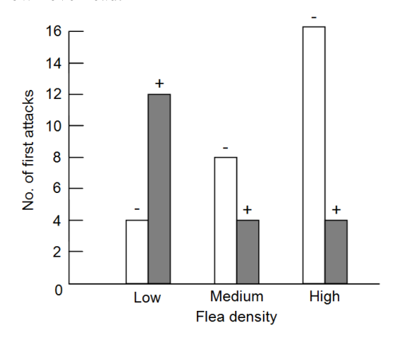
Stickleback feeding response vs flea density with/without kingfisher overheadTopic: Modern-Quantum Physics Metodi: Experimental Data Analysis, Statistical Averaging Competenze: Experimental Data Analysis, Graph Linearization Fonte: Testo (PDF) — p.23
Problema 46
(2 points) An ecologist carried out experiments to study the differences in clutch sizes in magpies, Pica pica and the effect of the clutch sizes on the raising of the young. Initial clutch size is the number of eggs laid by a bird in nature. These brood sizes were experimentally reduced or enlarged by removal or addition of eggs respectively. The results of the experiments are shown in the graph.
State whether each of the following statements is true or false by putting tick marks in the appropriate boxes.
a. As clutch sizes are experimentally made larger, survivability of young always goes on decreasing. b. Observed natural clutch sizes could vary depending on the feeding conditions in different territories. c. Efficiency of raising young is highest when experimental brood size matches the initial clutch size laid in most groups. d. Experimental brood size smaller than initial clutch size laid always gives the lowest efficiency of raising young.
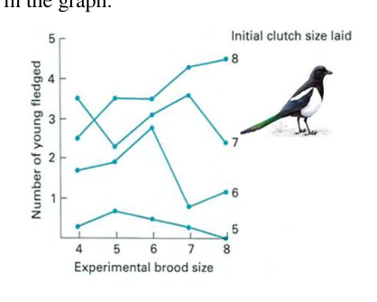
Magpie experimental brood size vs efficiency of raising youngTopic: Modern-Quantum Physics Metodi: Experimental Data Analysis, Statistical Averaging Competenze: Experimental Data Analysis, Graph Linearization Fonte: Testo (PDF) — p.24
Problema 47
(4 points) In prey-predator relationships, it is expected that natural selection would increase the efficiency with which predators detect and capture prey. On the other hand, one would also expect improvement in the prey’s ability to avoid detection and capture. Some predator activities are tabulated below. Choose from the choices given for predator adaptations and counter-adaptations by prey and fill in the table with appropriate numbers and alphabets respectively. Note: Use each option only once in the table. (0.5 point will be awarded for each completely correct box)
Options for predator adaptations: I. Subduing skills II. Motor skills (speed and agility) III. Improved visual acuity IV. Detoxification ability V. Weapons of offence VI. Learning (to differentiate)
Options for counter-adaptations by prey: A. ‘Startle’ response B. Crypsis C. Spines/tough integument D. Escape flights E. Mimicry F. Spacing out
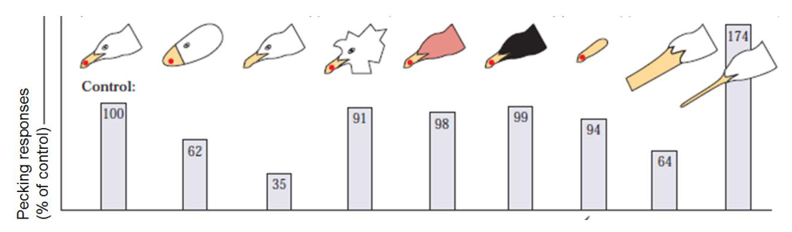
Predator activities and prey counter-adaptations matching tableTopic: Modern-Quantum Physics Metodi: Physical Modeling, Experimental Data Analysis Competenze: Diagrammatic Reasoning, Physical Reasoning Fonte: Testo (PDF) — p.24
Problema 48
(3 points) Tinbergen and A. C. Perdeck carefully examined the releasers (sign stimuli) involved in the interaction between Herring gulls and their chicks during feeding. They carried out a series of experiments with paper cut-out models of gull heads with many variations which were presented to naive newly-hatched gull chicks and the pecking response to each model was counted. The results are shown below.
Indicate whether each of the following statements is true or false by putting tick marks in the appropriate boxes.
a. A realistic head shape is as important as a dot for generating a response. b. Head colour has no effect on the ability of a dot to stimulate the pecking response. c. A dot alone is sufficient to give the highest response by the chicks. d. The experiment demonstrates associative learning behaviour in the chicks. e. Slender long bill elicits a stronger response than a realistic head shape. f. Presence of a long thin bill elicits a comparable response as a short bill with a dot.
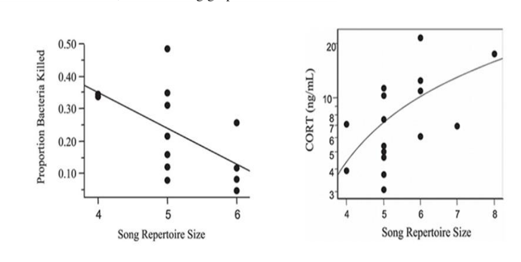
Gull head models and chick pecking response dataTopic: Modern-Quantum Physics Metodi: Experimental Data Analysis, Statistical Averaging Competenze: Experimental Data Analysis, Physical Reasoning Fonte: Testo (PDF) — p.25
Problema 49
(2 points) In a study with male Brown-headed Cowbirds, birds with different repertoire sizes were sampled. Song repertoire size of a bird is defined as the unique number of songs played by an individual. When the serum antibacterial activity and serum cortisol levels of these birds were measured, the following graphs were obtained.
State whether the following statements are true or false by putting tick marks in the appropriate boxes.
a. Serum cortisol levels are likely to show positive correlation with immune function of the bird. b. Male cowbirds with larger repertoires are likely to be engaged in more aggressive interactions with other males as compared to those with smaller repertoires. c. Energy expended in aggressive encounter is likely to affect the immune function adversely. d. A larger repertoire is likely to correlate with the reproductive success of the bird.
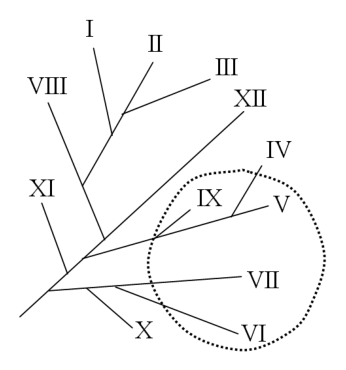
Repertoire size vs serum antibacterial activity and cortisolTopic: Modern-Quantum Physics Metodi: Experimental Data Analysis, Statistical Averaging Competenze: Experimental Data Analysis, Graph Linearization Fonte: Testo (PDF) — p.25
Problema 50
(2 points) Consider the phylogenetic tree given below, with some species marked with in a circle.
Mark whether the following statements are true or false by putting tick marks in the appropriate boxes.
a. Including ‘IV’ and ‘X’ in the circle will make the species within the circle a monophyletic group. b. Excluding ‘VI’ and ‘VII’ from the circle and including ‘IV’ will make the species within the circle a monophyletic group. c. Including ‘XII’, ‘IV’ and ‘X’ in the circle will make the species within the circle a monophyletic group. d. Including all the species currently within the circle and all those outside the circle will form a monophyletic group.
Topic: Modern-Quantum Physics Metodi: Physical Modeling Competenze: Diagrammatic Reasoning, Physical Reasoning Fonte: Testo (PDF) — p.26